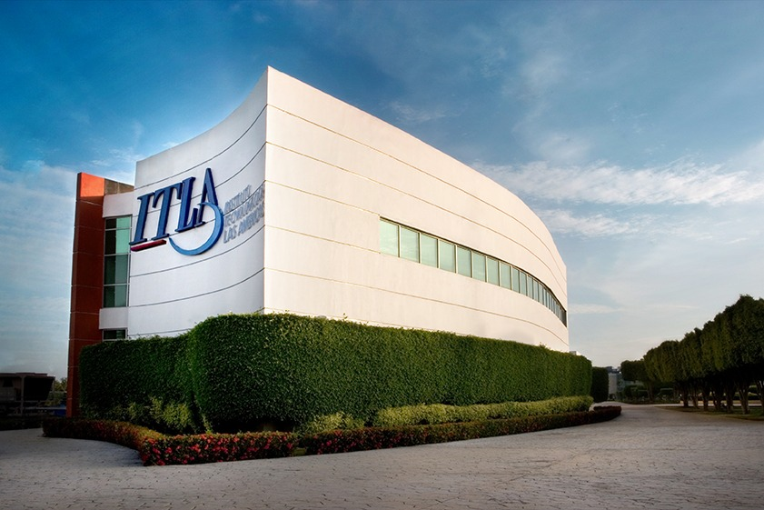

¡Del ITLA pa’ la NASA! 🚀💫
16 de octubre, 2025
Siendo la primera vez en aplicar, la institución marca un nuevo hito al ser la única en debutar en ambas categorÃas, Human Powered y Remote Controlled del NASA Human Exploration Rover Challenge, un logro que demuestra que el talento dominicano tiene alcance interplanetario. El equipo RDX nos representará con vehÃculos diseñados para desafiar terrenos que simulan la superficie de otros planetas, combinando ingenierÃa, creatividad y mucha pasión por la innovación.